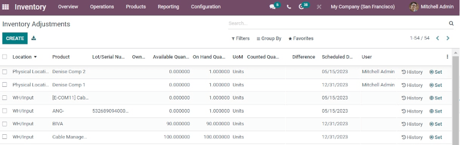
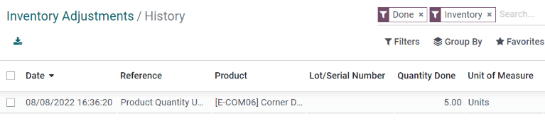

Inventory adjustments¶
In any warehouse management system, the recorded inventory counts in the database might not always match the actual inventory counts in the warehouse. The discrepancy between the two counts can be due to damages, human errors, theft, or other factors. As such, inventory adjustments must be made to reconcile the differences, and ensure that the recorded counts in the database match the actual counts in the warehouse.
Inventory Adjustments page¶
To view the Inventory Adjustments page, navigate to .
On the Inventory Adjustments page, all products that are currently in stock are listed, with each product line containing the following information:
Location: the specific location in the warehouse where a product is stored.
Product: the product whose quantity is listed on the inventory adjustment line.
Lot/Serial Number: the tracking identifier assigned to the specific product listed. It can contain letters, numbers, or a combination of both.
Note
If a specific product has a quantity of more than 1.00 in stock, and more than one serial
number (or lot number) assigned to it, each uniquely-identified product is displayed on its own
product line with its own lot/serial number, displayed under the Lot/Serial Number
column.
On Hand Quantity: the quantity of the product currently recorded in the database.
UoM: the unit of measure in which the product is measured. Unless otherwise specified (i.e., in Pounds or Ounces), the default UoM is Units.
Counted Quantity: the real quantity counted during an inventory count. This field is left blank by default, but can be changed, depending on if it matches the On Hand Quantity or not.
Difference: the difference between the On Hand Quantity and Counted Quantity, once an inventory adjustment is made. The difference is automatically calculated after every inventory adjustment.
Scheduled Date: the date at which a count should be made. If not otherwise specified, this date will default to the 31st of December of the current year.
User: the person assigned to the count in the database. This can either be the person physically counting the inventory, or applying the count in the database.
Product Category: the category assigned internally to a specific product. Unless otherwise specified (i.e., as Consumable or Rental), the default Product Category is set to All.
Available Quantity: the quantity of a specific product that is currently available, based on any outstanding/uncompleted sales orders, purchase orders, or manufacturing orders that might change the available quantity once fulfilled.
Accounting Date: the date on which the adjustments will be accounted in the Odoo Accounting app.
Company: the company whose database these inventory adjustments are being made on. The company is listed in the top right corner of the database, next to the user currently logged in.
Tip
Some columns are hidden by default. To reveal these columns, click the additional options button (three dots icon) to the far right of the form’s top row, and select any desired column to reveal by clicking the checkbox next to that option.
Create an inventory adjustment¶
To create a new inventory adjustment from the page, click Create. Doing so creates a new, blank inventory adjustment line at the bottom of the page.
On this blank inventory adjustment line, click the drop-down menu under the Product column, and select a product. If the selected product is tracked using either lots or serial numbers, the desired lot or serial number can also be chosen from the drop-down menu under the Lot/Serial Number column.
Next, set the value in the Counted Quantity column to the quantity counted for that product during the inventory adjustment process.
Note
The Counted Quantity for new inventory adjustments is set to 0.00 by default. An
inventory move with 0.00 Quantity Done is recorded in the product’s inventory
adjustment history, so it should be set to reflect the actual quantity counted.
To the right of the Counted Quantity column, the Scheduled Date and User can also be changed via their respective drop-down menus. Changing the Scheduled Date changes the date that the inventory adjustment should be processed on, and selecting a responsible User assigns a user to the specific inventory adjustment (for traceability purposes).
Once all changes have been made to the new inventory adjustment line, click away from the line. Doing so saves the adjustment, and moves the line to the top of the page.
If the Counted Quantity is greater than the On Hand Quantity, the value in the Difference column is green. If the Counted Quantity is less than the On Hand Quantity, the value in the Difference column is red. If the quantities match, and haven’t been changed at all, no value appears in the Difference column.

At this stage, the count (inventory adjustment) is recorded, but not yet applied. This means that the quantity on hand before the adjustment has not yet been updated to match the new, real counted quantity.
There are two ways to apply the new inventory adjustment. The first way is to click the Apply button on the line at the far right of the page. The second way is to click the checkbox on the far left of the line. Doing so reveals new button options at the top of the page, one of which is an Apply button. Clicking this button instead causes an Inventory Adjustment Reference / Reason pop-up window to appear.
From this pop-up menu, a reference or reason can be assigned to the inventory adjustment. By default, the Inventory Reference / Reason field is pre-populated with the date the adjustment is being made on, but can be changed to reflect whatever reference or reason is desired.
Once ready, click Apply to apply the inventory adjustment.

Count products¶
Counting products is a recurring activity in a warehouse. Once a count is complete, go to to update the Counted Quantity column for each product line.
On each product line, identify whether the value in the On Hand Quantity column recorded in the database matches the newly-counted value. If the recorded value and the counted value do match, click the Set button (target icon) at the far right of the product line.
Doing so copies the value from the On Hand Quantity column over to the
Counted Quantity column, and sets the value of the Difference column to
0.00. Subsequently, once applied, an inventory move with 0.00 Quantity Done is
recorded in the product’s inventory adjustment history.
If the newly-counted value for a given product does not match the value in the On Hand Quantity recorded in the database, instead of clicking the Set button, record the real value in the field in the Counted Quantity column.
To do so, click the field in the Counted Quantity column on the specific inventory
adjustment line for the product whose count is being changed. This automatically assigns a
Counted Quantity of 0.00.
To change this value, type in a new value that matches the real, newly-counted value. Then, click away from the line. Doing so saves the adjustment, and automatically adjusts the value in the Difference column.
If the Counted Quantity is greater than the On Hand Quantity, the value in the Difference column is green. If the Counted Quantity is less than the On Hand Quantity, the value in the Difference column is red. If the quantities match, and haven’t been changed at all, no value appears in the Difference column.
Subsequently, once applied, a move with the difference between the On Hand Quantity and the Counted Quantity is recorded in the product’s inventory adjustment history.
Important
Sometimes a count occurs, but cannot be applied in the database right away. In the time between the actual count and applying the inventory adjustment, product moves can occur. In that case, the on-hand quantity in the database can change and no longer be consistent with the counted quantity. As an extra precaution, Odoo asks for confirmation before applying the inventory adjustment.
Change inventory count frequency¶
By default, the scheduled date for inventory adjustments are always scheduled for the 31st of December of the current year. However, for some companies, it is crucial that they have an accurate inventory count at all times. In such cases, the default scheduled date can be modified.
To modify the default scheduled date, go to . Then, in the Operations section, locate the Annual Inventory Day
and Month setting, which includes a drop-down menu that is set to 31 December by default.
To change the day, click the 31, and change it to a day within the range 1-31,
depending on the desired month of the year.
Then, to change the month, click December to reveal the drop-down menu, and select the desired month.
Once all desired changes have been made, click Save to save all changes.
Plan big inventory counts¶
To plan big inventory counts, such as a full count of everything currently in stock, first navigate to .
Then, select the desired products to be counted by clicking the checkbox on the far left of each product line.
Tip
To request a count of all products currently in stock, click the checkbox at the very top of the table, in the header row next to the Location label. This selects all product lines.
Once all desired products have been selected, click the Request a Count button at the top of the page. This causes a Request a Count pop-up window to appear. From this pop-up, fill in the following information:
Inventory Date: the planned date of the count.
User: the user responsible for the count.
Accounting Date: the date at which the inventory adjustment will be accounted.
Count: to leave the on-hand quantity of each product line blank, select Leave Empty. To pre-fill the on-hand quantity of each product line with the current value recorded in the database, select Set Current Value.
Finally, once ready, click Confirm to request the count.
Important
In the Odoo Barcode app, users can only view inventory counts that are assigned to them, and are scheduled for today or earlier.
See also